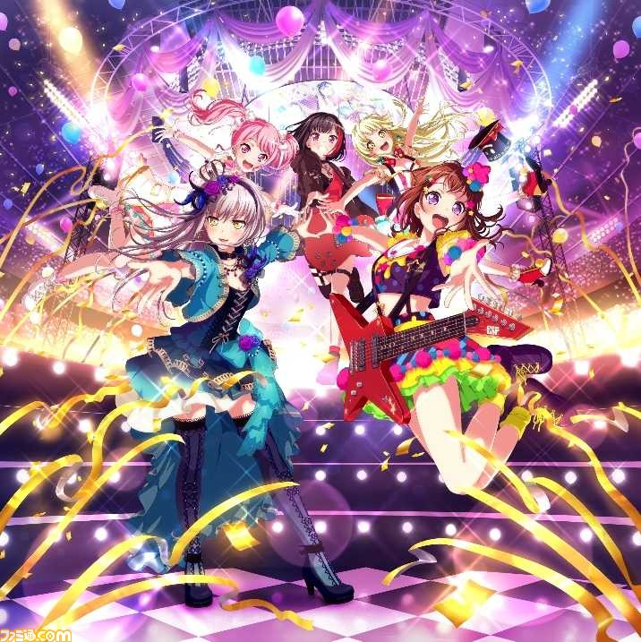

BanG Dream! ガールズバンドパーティー

・基礎情報
ブシロードのiOS・Android向けアプリケーションゲーム。略称は「ガルパ」。ジャンルはリズム&アドベンチャーゲーム。
開発元はCraft Egg。キャッチコピーは「はじめよう、私たちのバンド活動（ライフ）！」。
iOSおよびAndroid用ゲームアプリとして、ブシモより2017年3月16日配信された。
日本国外でも配信がされており、英語版、繁体字版、韓国語版、簡体字版が存在する。
女の子の繊細な表情変化などを表現するためにLive2Dを採用。また、主要キャラクターはフルボイス仕様となっているほか、一部キャラクターもボイスに対応している。
リズムパートではリズムゲームが苦手なユーザーでも楽しめるように難易度によるスコアの差が大きくならないよう調節されている。
また、ゲームプレイにユーザーの生活時間を費やさなくても楽しめるように、イベント報酬のハードルを低く設定しており、無理なくゲームをプレイできる環境を整えている。
リズムアイコンの形状については、操作の際にプレイヤーのストレスが極力たまらないように工夫されている。
また、手持ち操作や親指2本での操作でフルコンボできるかという点を意識しており、3本以上の指での操作が必要な場面を作らないようにしている。
イベント配信は約10日に1回と早いペースで行われている。これは、ユーザーはイベントを早く配信してくれた方が嬉しいのではないかという考えからきている。
早いペースでの配信が可能な理由としては、シナリオやイラストなども含め、大部分の制作・開発をCraft Egg社内の所属スタッフにより内製しているため。イベントの更新頻度が多くてもクオリティの高い内容を届けられるように、シナリオは約半年前から制作を開始してストックを貯めておき、イラストなども配信の1か月前には完成するようにスケジュールが組まれている。
(wikipedia参照)
公式サイト
攻略サイトは,こちら